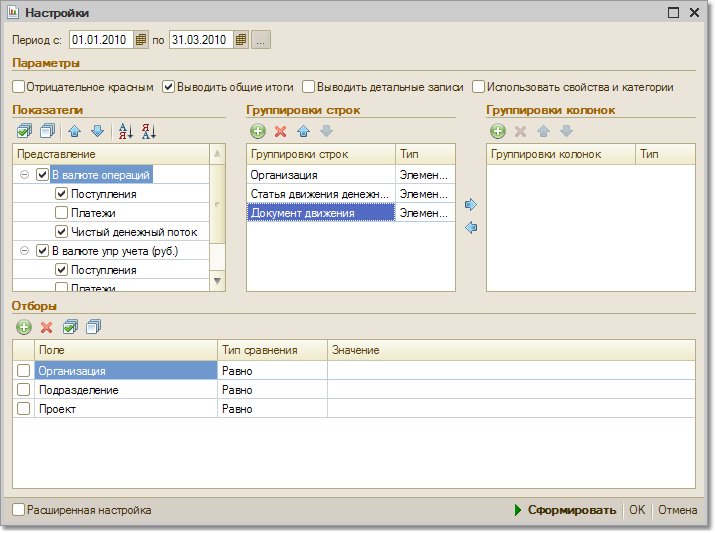

Отчет предназначен для анализа движения денежных средств торгового предприятия за определенный период времени.

Информация в отчете может быть сгруппирована с одной стороны, по реквизитам движения денежных средств (форма оплаты, расчетный счет (касса), статья движения денежных средств) и, с другой стороны, по реквизитам плательщика/получателя (контрагент, договор контрагента, сделка).
Также, в отчет может быть выведена детальная информация как по документам учета фактического движения денежных средств (банковские и кассовые документы), так и по документам, которыми эти платежи планировались. Таким образом, например, можно определить соотношение между объемами платежей, совершенных по заявкам на расходование средств и незапланированными платежами (по которым заявки не оформлялись).
Дополнительно, результаты отчета могут быть сгруппированы по временным периодам (день, неделя, месяц и т.д.).
Показатель "Чистый денежный поток" показывает разницу между поступлением и расходом денежных средств.
Отчет удобно применять для анализа движения денежных средств по статьям затрат. При этом можно произвести помесячное сравнение чистого денежного потока в разрезе статей затрат.